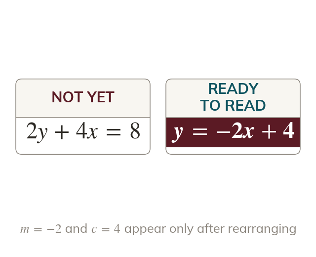
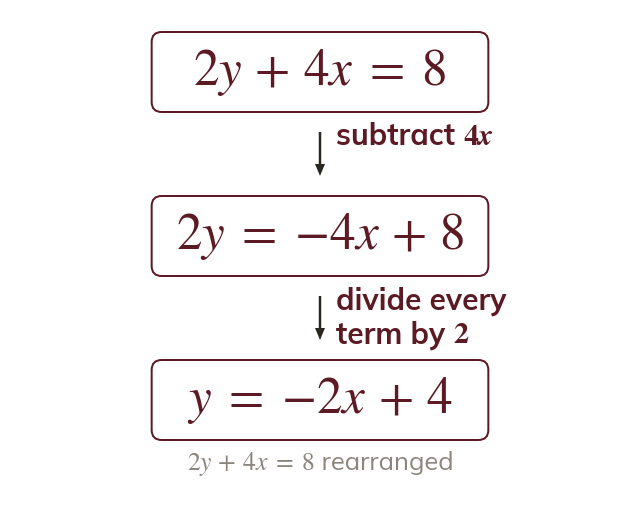
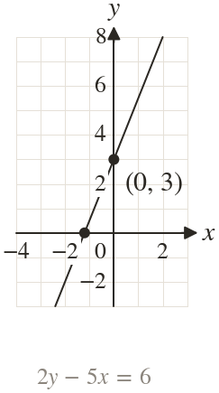
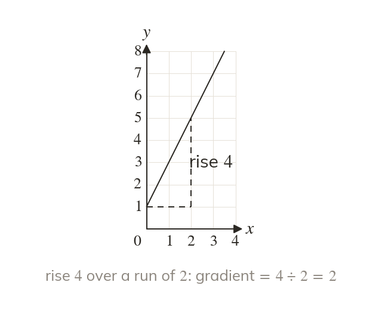
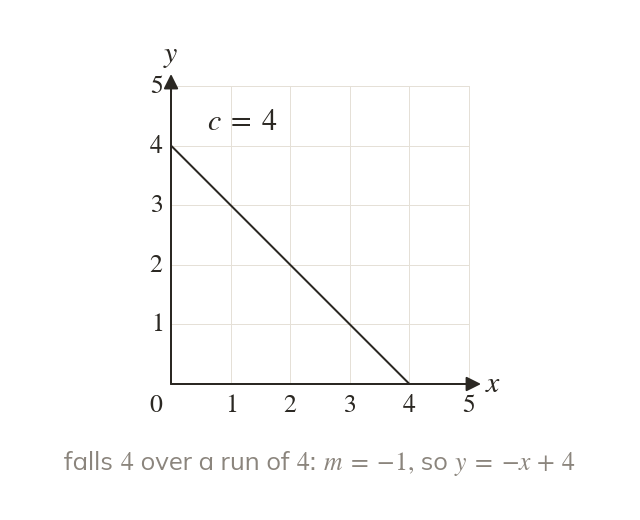
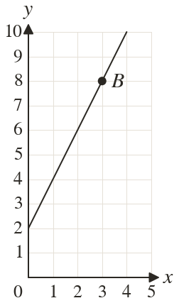
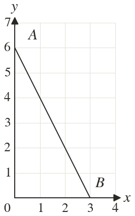

Only shows and
The gradient and intercept can be read only when y stands alone. Any other form is rearranged first.
Equations of lines arrive in many forms, and graphs arrive with no equation at all. Both are turned into the form that shows the gradient and the intercept at a glance.
Work down the page at your own pace. Write every answer in your book first, then click to check it.
Read each card, then follow the worked examples one step at a time.

The gradient and intercept can be read only when y stands alone. Any other form is rearranged first.

Dividing by the coefficient of y applies to every term. One term left undivided gives a different line.
Pick an answer. If it's wrong, the feedback tells you which mistake it was.

Read each card, then follow the worked examples one step at a time.

The gradient is the rise divided by the run between two points. A falling line has a negative rise.

The intercept is read where the line crosses the y-axis. With it gives


Pick an answer. If it's wrong, the feedback tells you which mistake it was.
Finished? Next lesson: 10H.2.3 Shading Inequality Regions.
For each skill, tap the one that is true for you today. Your Revise pages start with anything you mark Not yet.
Your ratings are saved on this device only.
Log in, then search for a code to practise that skill.
Videos, worksheets and more on each part of this lesson.